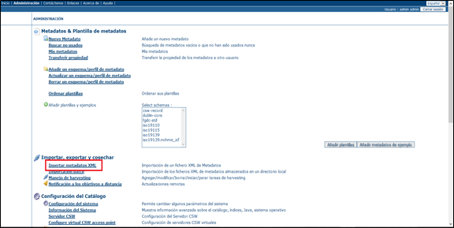
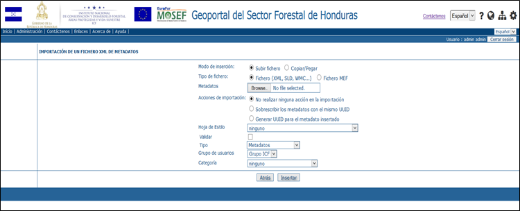
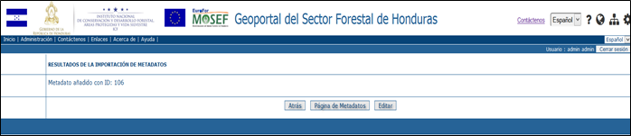
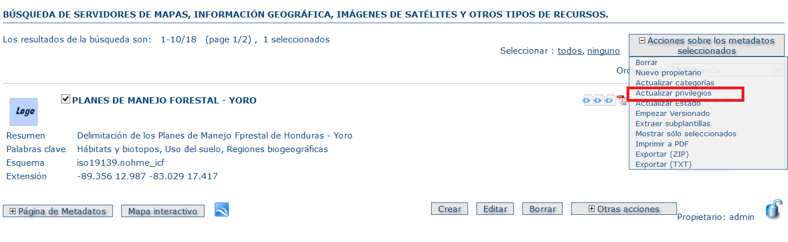
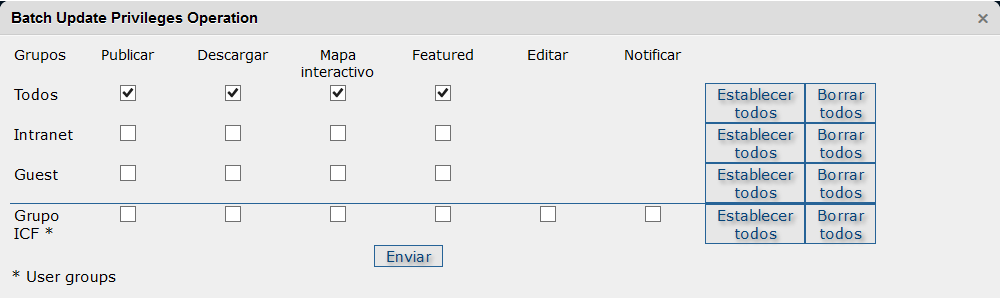
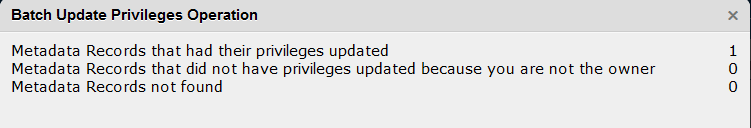

Insertar metadatos XML
El Panel de Administración Metadatos, entre otros, presenta básicamente una funcionalidad (Insertar metadatos XML) que permite importar en el sistema los metadatos en formato XML, precedentemente creados con las herramientas proporcionadas por especificas aplicaciónes (ej. CatMDEdit)

Panel de Administracion Metadatos
Pulsando Insertar metadatos XML, se abre una nueva página

Importacion XML
Esta pagina permite al usuario autorizado de completar los siguientes pasos:
- Importación del metadato (varios formatos)
- Validación semántica del metadato importado
- Configuración de unas características
- Carga definitiva del metadato en la Base de Datos de Publicación del Geoportal
Las opciones que deben ser elegidas para validar y completar la carga definitiva de los metadatos XML son las siguientes:
- Modo de inserción: Permite elegir el método para importar el archivo del metadato
- Elegir en caso de importación del archivo del metadato (ej. Formato XML)
- La aplicación necesita que sea definido el directorio en el equipo del usuario autorizado donde el archivo está archivado. Pulsar el botón Browse e importar el metadato
- Elegir en caso de copia del contenido del archivo del metadato (ej. Formato XML)
- La aplicación abre una ventana donde el usuario debe pegar el contenido
- Tipo de Fichero: Permite elegir el formato del archivo del metadato
- Acciones de importación: Permite elegir una acción sobre el archivo de metadato importado
- No realizar ninguna acción en la importación
- Elegir en caso que el ID del metadato importado sea ya configurado (opción usual, CatMDEdit configura automáticamente un ID univoco)
- Sobrescribir los metadatos con lo mismo UUID
- Elegir en caso que el ID del metadato importado sea lo mismo de un otro metadato presente en el catalogo
- Generar UUID para el metadato insertado
- Elegir en caso de importación de un metadato sin ID
- Hoja de estilo: Permite elegir la hoja de estilo para el metadato importado
- Elegir Ninguno (Opción predefinida)
- Validar: Permite validar semánticamente el metadato importado
- Grupo de usuarios: Permite elegir un grupo restringido de usuarios
- Elegir Grupo ICF (Opción predefinida)
- Categoría: Permite elegir una etiqueta que define grupos de metadatos con las mismas características generales. Haciendo clic sobre una categoría, en bajo a la izquierda en la página principal de la aplicación Catalogo de Metadatos, la ventana de los metadatos muestra todos los metadatos etiquetados con la categoría elegida.
- Las categorías disponibles son:
- Conjunto de datos
- Datos ICF
- Datos no ICF
- Mapas y Gráficos
- Otros recursos
Si la validación no se ha realizado correctamente, el sistema advierte con el mensaje “El metadato no es válido” junto con el error encontrado
Error de validación
Si la validación se ha realizado correctamente, el sistema advierte con el mensaje “Metadato añadido” junto con la indicación del ID asignado.
El metadato está automáticamente cargado en la Base de Datos de Publicación del Geoportal

Metadato añadido correctamente
El metadato está automáticamente cargado en la Base de Datos de Publicación del Geoportal.
Para que sea disponible en el Catalogo de Metadatos para todos los usuarios es necesario actualizar los privilegios del metadato con el siguiente procedimiento:
- Seleccionar el metadato
- Hacer clic sobre “Acciones sobre los metadatos”. El menú que se abre tiene más opciones que en el caso de usuario no autorizado
- Seleccionar “Actualizar Privilegios”

Acciones sobre los metadatos: Actualizar Privilegios
- Seleccionar “Actualizar Privilegios”.
- En la ventana que se abre, para establecer privilegios para todos los usuarios, hacer clic sobre “Establecer Todos” y después “Enviar”

Establecer privilegios para todos los usuarios
- La ventana que se abre resume las operaciones efectuadas, con los eventuales errores

Privilegios actualizados
El metadato ahora está disponible en el Catalogo de metadatos para todos los usuarios del Geoportal